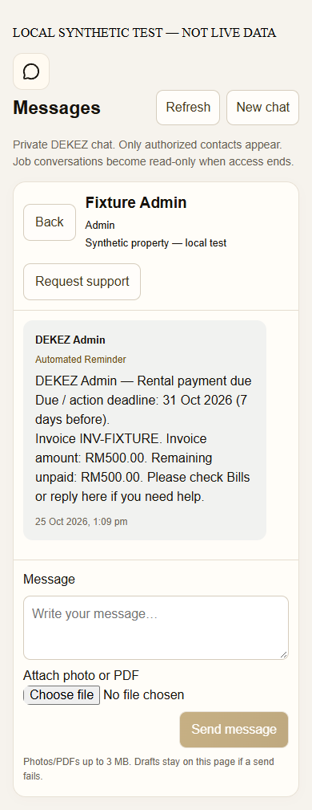
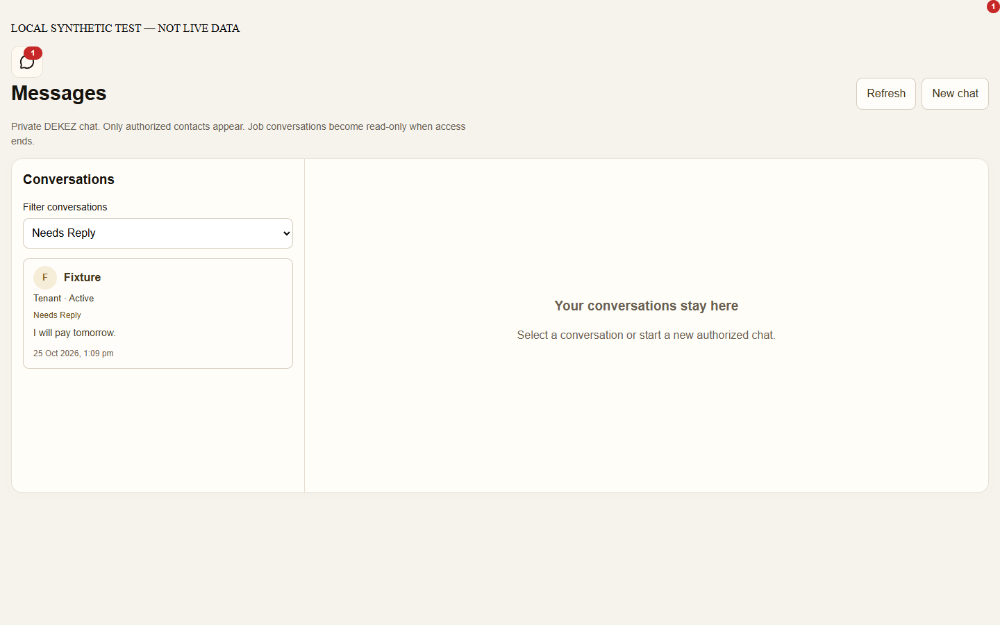
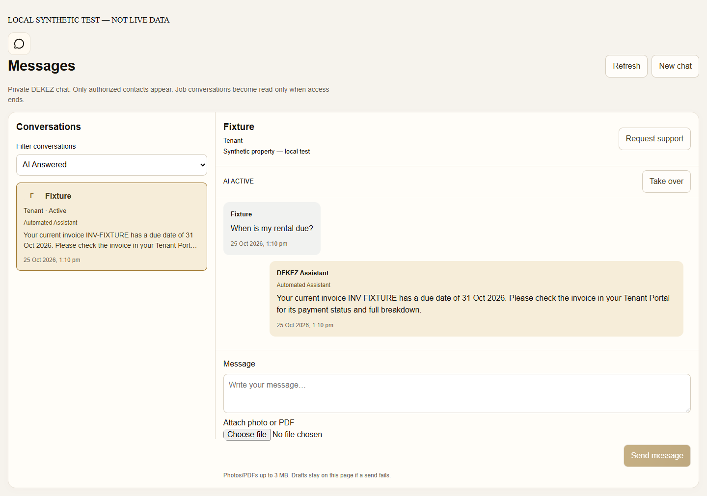
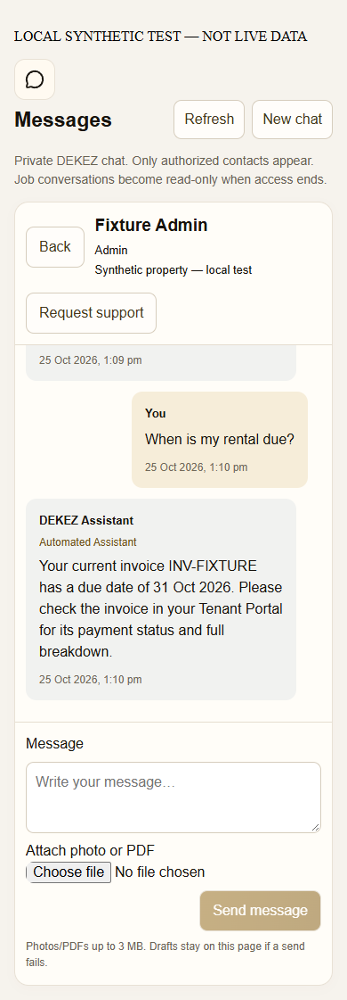
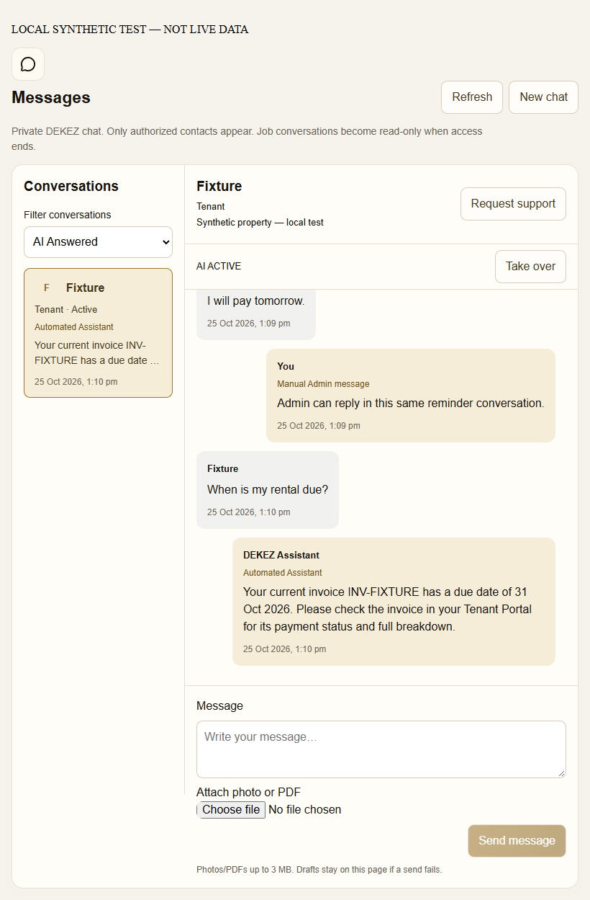

What is ready to review
- Reminders at 7 / 3 / 1 days, deadline and one overdue stage, with duplicate prevention and a fresh completion check before sending.
- Bounded answers from actual authorized records, clearly labelled DEKEZ Assistant.
- Uncertain questions, complaints and approval requests become Needs Admin Reply; automation pauses.
- Manual Admin replies take over the same conversation. Admin can explicitly re-enable the assistant.
These screenshots are captured from the actual shared chat component, API handlers and migrated local SQL—not a redesign mockup. The surrounding full portal is not rendered in this isolated fixture.
1. Tenant receives a reminder and can reply




2. Simple answer inside the same conversation






Test results
| Check | Result |
|---|---|
| Configured application regression gate | 543 passed, including 130 chat checks. |
| Owner-style UI regression checks | 3 passed. |
| Production build | Passed locally. |
| Browser interaction suite | Passed on all 12 viewport sizes; no browser exceptions or page-width overflow. |
| Protected business records | Full reminder → tenant question → assistant → escalation → manual reply flow passed while writes to all synthetic business-source tables were blocked. |
| Live services | Not tested or activated: real Supabase WebSocket transport, real customer authentication and paid model provider. |
Viewports: 320×568, 375×812, 390×844, 430×932, 768×1024, 820×1180, 1024×768, 1024×1366, 1280×800, 1366×768, 1440×900, 1920×1080.
Full local build/test log · Detailed findings and rollout gates
Before live activation
- Review and approve the replies, then validate the additive migrations and real delivery in an approved isolated environment.
- Reminders need an existing authorized Admin–Tenant conversation. They never create contacts or bypass permissions.
- Signing, notice and auto-renewal deadlines must come from reviewed actual agreement terms. Missing or contradictory terms are skipped, not invented.
- No model is configured: the tested default uses reviewed templates and strict intent matching. Optional AI classification requires an approved provider, configuration and evaluation.
- Confirm office hours and scheduling capacity; review existing dependency security advisories before a production release.
Live deployment and sending remain off until separate approval.